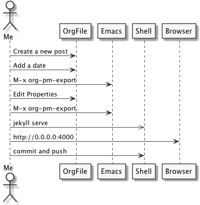

If I have to keep a blog then I want it to be integrated in my trusted org-mode setup. That way I can write and publish my posts straight from the place I keep my notes and tasks which should lower the threshold as much as possible to actually post regularly to my new blog. This is how it looks:
*** Posting to Jekyll Blog with Org-Publish-Meta :_blog_: :PROPERTIES: :AUTHOR: remyhonig :DATE: [2014-09-07 Sun] :COMMENTS: true :SHARING: true :LAYOUT: post :IMAGE: movabletype.jpg :ID: 0236FFF2-B956-4682-B99E-219ADD97B197 :END: ***** Introduction If I have to keep a blog then I want it to be integrated in my trusted org-mode setup. That way I can write and publish my posts straight from the place I keep my notes and tasks which should lower the threshold as much as possible to actually post regularly to my new blog. ******* Versions These are the versions of the relevant packages and software used for this post. | emacs | 24.4.50.1 | | org-mode | 8.2.7c | | org-publish-meta | 9aa9aa8b |
These are the versions of the relevant packages and software used for this post.
| emacs | 24.4.50.1 |
| org-mode | 8.2.7c |
| org-publish-meta | 9aa9aa8b |
I already tried some approaches that I found right away by a search for "jekyll orgmode". These approaches had problems that I with my beginner knowledge of elisp could not solve or they did not match my requirements. I'll explain how they work and why they didn't for me.
This is his description of the Org-jekyll package:
Extracts subtrees from your org-publish project files that have a :blog: keyword and an :on: property with a timestamp, and exports them to a subdirectory _posts of your project's publishing directory in the year-month-day-title.html format that Jekyll expects. Properties are passed over as yaml front-matter in the exported files. The title of the entry is the title of the subtree.
But he starts of by stating (Please note: I am no longer using org-jekyll.) which - I assume - also means the package is not maintained any longer.
The problem I had is that while running an export using the command
org-jekyll-export-blog it crashed with an error. I guess this is due
to a newer Orgmode version I'm using.
I liked this approach of the alternatives the best but I could not get it to work.
Cute-Jumper's approach is to have one org file per post and this is reason enough for me to not use it. It means I have to manage a bunch of files outside of my existing and regularly used org files. Also I'll have to export them one-by-one. That means I have to keep track of what post is already published and what post is not. Too much bookkeeping for my taste.
Eggcakers's approach is to use a Ruby gem to convert org-mode files to Jekyll files. This moves the responsibility of the conversion from org-mode out of Emacs and into Jekyll. This also uses one file per post and has a deal-breaking disadvantage. It can only convert the most common org-mode syntax. It cannot evaluate source blocks and include it into the export. Considering I'm writing a developer blog this will be something I want for certain posts.
Iana's approach makes it possible to not only store the blog posts in a single org-mode file but also to store the publish project configuration in the same org-mode file!
I found out about it through Sacha Chua's tweet:
Do you use Org Mode with Jekyll or Octopress? https://t.co/x4RDlDi4MI might be interesting. (Haven't tried it yet, since I use Wordpress)
— Sacha Chua (@sachac) February 16, 2014Not all was well tough. I had to perform some fixes for my particular setup.
I use the So Simple theme for Jekyll which has a front matter property named image. I edited org-pm.el to look for this org-mode property in addition to the standard Jekyll front matter it already supports.
diff -c /Users/rhonig/.autosaves/\!Users\!rhonig\!.emacs.d\!lisp\!org-publish-meta\!org-pm.el.\~1\~ /Users/rhonig/.emacs.d/lisp/org-publish-meta/org-pm.el *** /Users/rhonig/.autosaves/!Users!rhonig!.emacs.d!lisp!org-publish-meta!org-pm.el.~1~ 2014-09-06 13:41:10.000000000 +0200 --- /Users/rhonig/.emacs.d/lisp/org-publish-meta/org-pm.el 2014-09-06 21:42:33.000000000 +0200 *************** *** 914,919 **** --- 914,920 ---- (permalink (plist-get section-plist :PERMALINK)) (published (plist-get section-plist :PUBLISHED)) (sharing (plist-get section-plist :SHARING)) + (image (plist-get section-plist :IMAGE)) (footer (plist-get section-plist :FOOTER))) (setq layout (or layout (plist-get section-plist :LAYOUT) (if date "blog" "default"))) *************** *** 937,942 **** --- 939,945 ---- (if comments (insert (format "comments: %s\n" comments))) (if sharing (insert (format "sharing: %s\n" sharing))) (if footer (insert (format "footer: %s\n" footer))) + (if image (insert (format "image: \n feature: %s\n" image))) (when categories (insert "categories:\n") (dolist (category (split-string categories ", ")) Diff finished. Sun Sep 7 11:19:35 2014
Because org-publish-metadata sets an Author property. The default site.owner is not used in the So Simple Theme which causes the bio photo to break.
I fixed this by adding an author in _data/authors.yml.
# Authors remyhonig: name: Remy Honig avatar: bio-photo.jpg
I refer to that author in the properties of the post.
Grizzl is a dependency of org-publish-metadata.Installing grizzle is
as easy as running M-x package-install grizzl but either
org-publish-metadata cannot autoload it properly or grizzle isn't
setup properly for autoloading (maybe Cask causes it, I'm not sure). I
get a Required feature `grizzl-core' was not provided when running
M-x org-pm-menu.
To solve this I load grizzl manually.
(add-to-list 'load-path "~/.emacs.d/lisp/org-publish-meta") (add-hook 'org-mode-hook (lambda () (load "grizzl-core.el") (load "grizzl-read.el") (require 'org-pm)))
I use a dark theme in Emacs so the exported source code blocks also have this theme. To display them nicely I added some css to the site
.org-src-container, .example { background-color: #353535; color: #fff; margin-left: 5px; padding-left: 10px; padding-top: 2px; padding-bottom: 2px; }
This is the workflow I can now use to write posts.
This will be needed only once.
This also triggers org-pm to load.
M-x org-pm-insert-new-project
*** org-publish projects :PROJECT_DEFS: ***** blog :PROPERTIES: :ID: 96AC22C1-B805-46D5-B6FC-C2B9C6C05A12 :END: ******* body-only t ******* publish-to-jekyll t ******* default-layout "page" ******* base-directory "~/blog/org-pm/" ******* base-extension "org" ******* recursive t ******* publishing-directory "~/blog/_posts/blog/" ******* publishing-function 'org-html-publish-to-html ******* headline-levels 4 ******* section-numbers nil ******* with-toc t ******* with-author t ******* with-creator t ******* with-emphasize t ******* with-sub-superscript nil ******* with-tables t ******* with-tags t ******* with-tasks t ******* with-todo-keywords nil ******* with-latex t ******* with-drawers nil ******* toc-heading "Contents" ******* static-base-directory "~/blog/org-pm/images/" ******* static-publishing-directory "~/blog/images/" ******* static-base-extension "css\\|js\\|less\\|scss\\|php\\|rb\\|py\\|pdf\\|jpg\\|gif\\|png" ******* static-publishing-function 'org-publish-attachment ******* static-recursive t...
For me the indentation of the new configuration heading was a level to
high. Maybe this is caused by the #+STARTUP: odd org config, maybe
by me. I don't really care about this as this step will only be taken
once. Failing to do this will cause the org-publish-metada to not find
the configuration under the right header. See the org-publish-metadata
tutorial for details about the form of the configuration.
For creating a post.

Creating a post by simply adding a new heading and giving it the
_blog_ tag in this case. The tag name depends on the name of the
publishing configuration heading and must be wrapped in underscores.
When adding a date, use an inactive timestamp [2014-01-01] as an
active timestamp <2014-01-01> leads to a double date in the exported
post's filename. 2014-01-01-2014-01-01-hello.html instead of
2014-01-01-hello.html.
M-x org-pm-export. You might need to expand all headings if you get
an error message when executing this command with S-tab S-tab S-tab.
After the export I add the appropriate properties by copying them from the example post at the top. This could be done even faster by using yasnippet.
jekyll serve
cd ~/blog/_posts && git add . && git commit -m "New post" && git push origin